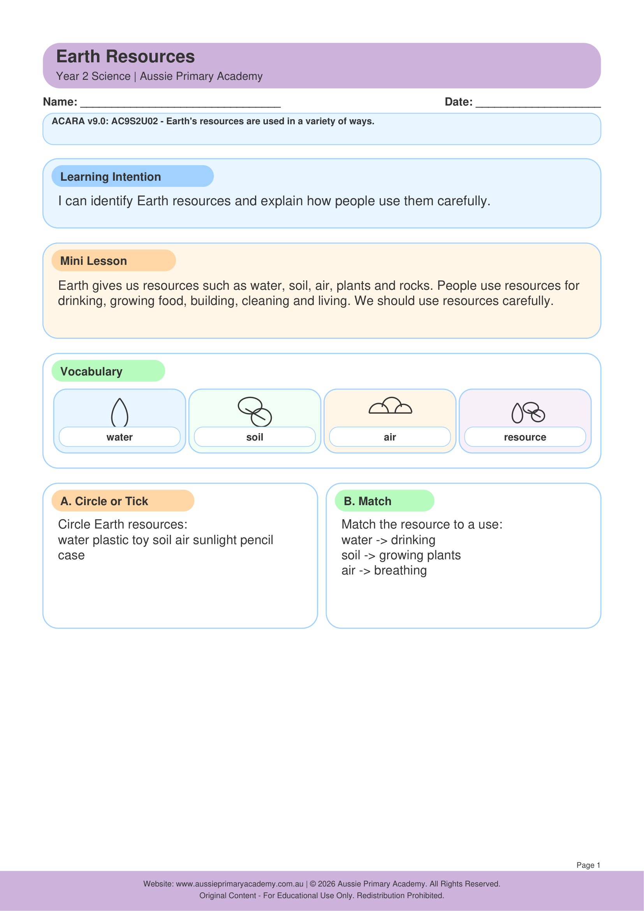

Year 2 · Science · Earth and Space Sciences · Free Printable
Earth Resources
Identify useful Earth resources and consider responsible ways to use and care for them.
Resource Details
- Year level: Year 2
- Subject: Science
- Focus: Earth Resources
- Resource type: Free printable worksheet · PDF
- Curriculum status: Supplementary Year 2 Science resource
- Best for: Classroom practice, homework, tutoring or homeschool learning
Worksheet Preview

Learning Intention
Students will identify Earth resources such as water, soil, rocks and minerals and describe how people use and care for them.
Curriculum Status
Supplementary topic
This resource supports Year 2 Science learning but is not assigned a Year 2 Australian Curriculum v9.0 Science understanding code.
Teacher Notes
Start with a nature walk or picture sort of water, soil, wood, sand and rocks. Discuss caring for Country and sustainable use. Use local Aboriginal perspectives on caring for land and water where possible.
Skills Practised
- Identifying Earth resources
- Natural vs processed resources
- Sustainable use
- Caring for Country